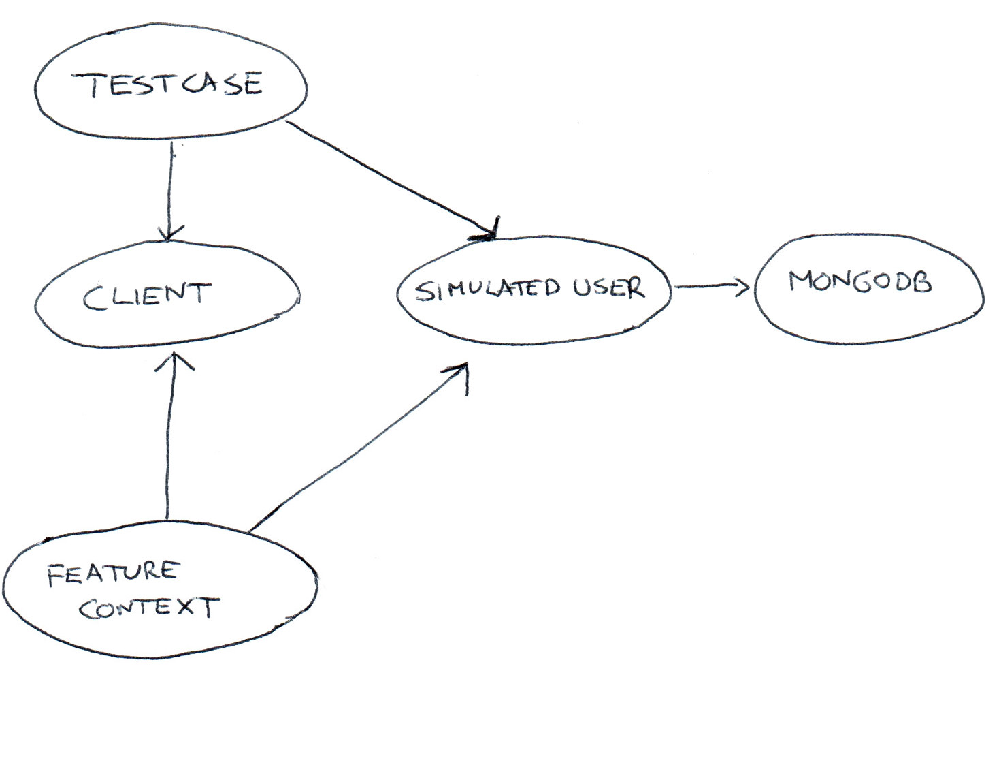

How to test 2 years of behavior
for 16 70 countries
in 4 minutes... 18 minutes
Giorgio Sironi
Giorgio Sironi (@giorgiosironi)

- I'm a developer (writes code, design stuff)
- Interested in
- Automated testing and TDD
- Object-oriented programming
- Distributed systems
If you are looking at these slides on your pc, press S to see the notes
Context

What we wanted to do
- daily deployment
- refactor the hidden legacy code in the core system
- deal with moving and complex requirements, always know what's live
The standard solution
| unit | end-to-end |
| fast | slower |
| isolated | all-encompassing, covering even legacy |
| 1000s | 100s |
| technical | customer-facing |
| "A return code of 709143 is FAILED" | "I am billed with the message 'Thank you for your purchase'" |
| Bicycle toolkit | Cycling |
Introducing simulators

"Just test with the real thing you mockist design-damager!"
A run of the suite when tested with real mobile phone operators (which have no preproduction systems) costs about 500 EUR
Simulator API
SimulatedUser::addBilling($phoneNumber, $amount) : boolean
new SimulatedUser($mongoCollection);
TDD at the System Scale
If you can't test results through the API (need to look into the database directly for results), you're missing a way to monitor and drive the real system.Tests are just another client of
- Merchant notifications (SUBSCRIPTION_ACTIVATED)
- Logs of calls between components
- Domain Events raised
"Stop introducing APIs just for testing you mockist design-damager!"
A run of our suite if executed manually by someone would take several weeks to complete. You can test with real databases, but not with real time.
1st try: PHPUnit

1st try: PHPUnit
public function testAIusacellUserWithMoneyCanActivateASubscription($serviceId, ...)
{
$this->given(
$this->withServiceId($serviceId)
->withOperator('Iusacell')
)
->when(
$this->subscribing()
)
->then(
$this->userReceivesBillings($firstBillingMessage)
->forTimes(1)
->merchantIsNotifiedOf('SUBSCRIPTION_ACTIVATED')
->userReceivesBillings($renewalMessage)
->forTimes(3)
);
}
2nd try: Behat
Given I am a US user
When I subscribe to US_BROWSER_GAME
Then I am billed 3.00 USD
2nd try: Behat
The renewals problem
Given I am a US user
And I have subscribed to US_BROWSER_GAME a week ago
Then I am renewed with a 3.00 USD billing?
Execution time: 168 hours
Time passing is a Command to the system
Given I am a US user
And I have subscribed to US_BROWSER_GAME
When a week has passed
Then I am renewed with a 3.00 USD billing
Business time API
$ curl -X POST 'http://example.com/subscription/42/clock' \
-H 'X-Some-Authentication: ...'
-d 'ticks=168'
{
now: "2014-05-16T09:30:00Z"
}
The race condition problem

They expose design problems that may become serious bugs in production under large traffic.
The "integrated tests are slow" problem
$ time vendor/bin/behat features/
... much later
real 121m6.114s
Discovery: our applications support concurrency

The code for parallelization
grep -nHR "Scenario:" features/ | sort -t: -k1,1 -k2,2n \
| cut -d ":" -f1,2 | parallel -P 200% --gnu --halt-on-error=0 \
--keep-order "php bin/behat {}"
by @badkill
Final results
X countries with 2 years of simulated time, in X minutes
Configuring new countries, merchant and services with confidence
Stop regressions while daily integrating (and deploying) the work of multiple teams and microservices
Living documentation (at least for the developers)
Enabling cleanup of legacy code now covered
Simulating the feasibility of a scenario in minutes
Built a sandbox for integration of merchants where they do not spend real money
Interested?


Thanks!
elifesciences.org (of course, we're hiring)